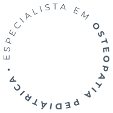

Sim. As técnicas utilizadas no atendimento pediátrico são manuais, suaves e não invasivas, aplicadas com pressão muito leve e sempre respeitando o conforto do bebê. A avaliação inicial identifica se há alguma condição que precise de encaminhamento ou acompanhamento conjunto com o pediatra.
Fisioterapeuta especialista em
osteopatia pediátrica
Cuidado gentil, seguro e individualizado para aliviar os desconfortos do seu bebê e apoiar cada fase do desenvolvimento.
Agende uma ConsultaDR HIDELVANI · CREFITO 9: 214946
Também atende adultos — conheça o Tratamento da Coluna